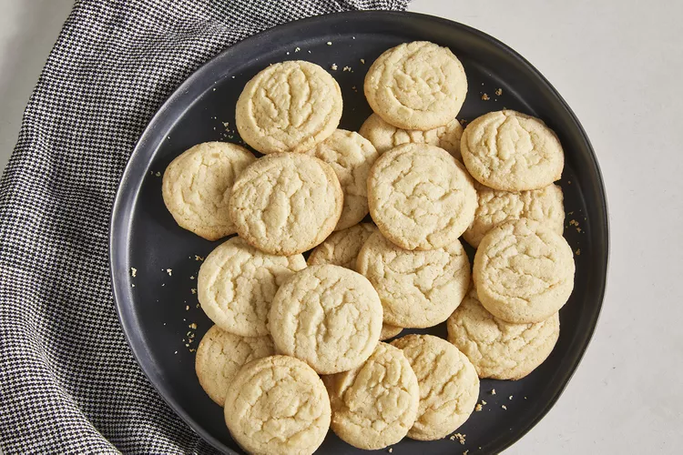

Easy Sugar Cookies

Description
Satisfy your sweet tooth with this top-rated sugar cookie recipe. It comes together with just a few ingredients you likely already have on hand — and the sugar cookies turn out perfect every time.
Ingredients
- Flour
- Leaveners
- Butter
- Sugar
- Egg
Steps
- Mix the dry ingredients in one bowl and the wet ingredients in another.
- Gradually blend the flour mixture into the butter mixture.
- Roll the dough into balls and bake until the edges are golden.